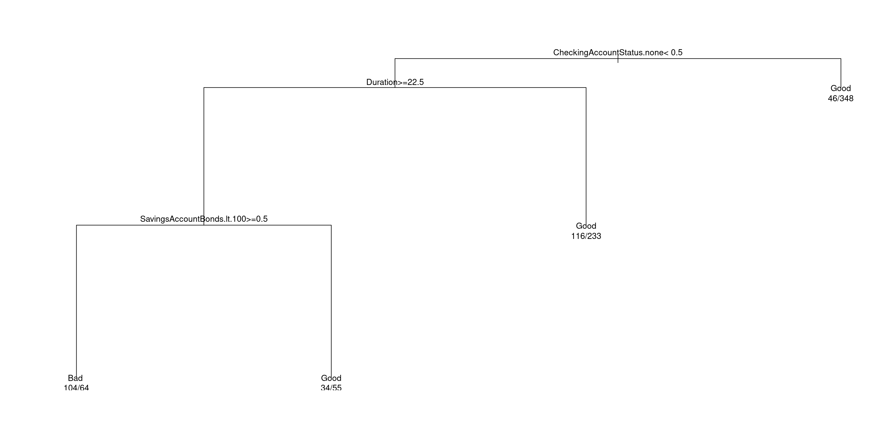
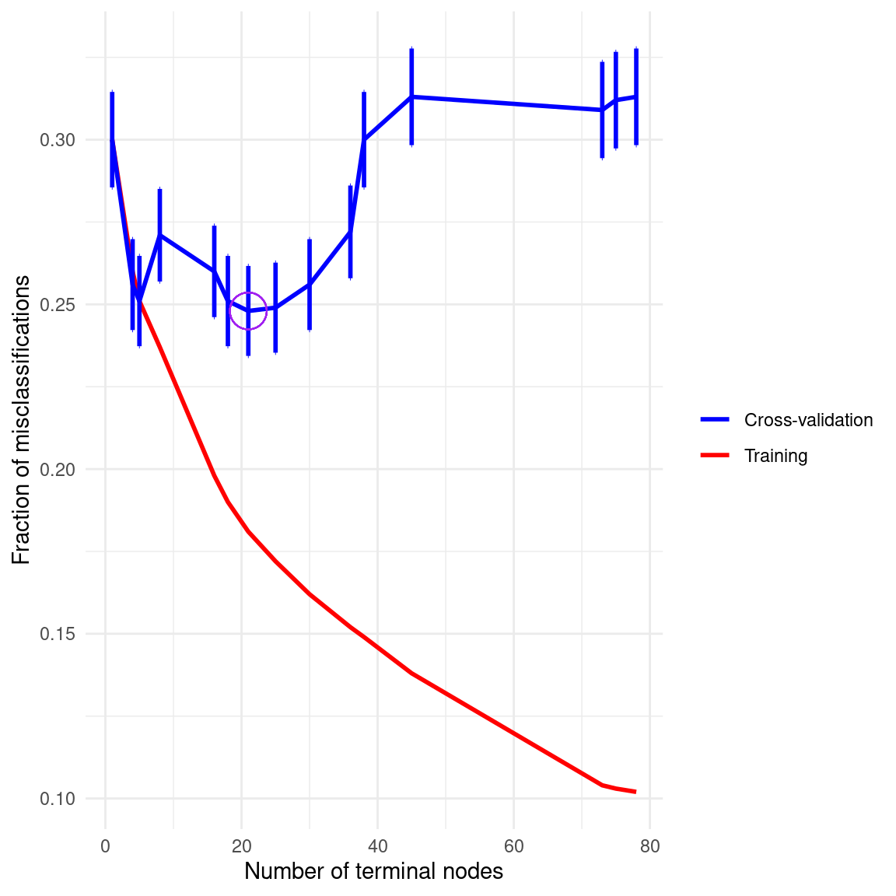

Code
library(rpart)
library(caret)GermanCredit datasetPS3192 25-26
Load all necessary libraries
library(rpart)
library(caret)The dataset is
data(GermanCredit)
str(GermanCredit)'data.frame': 1000 obs. of 62 variables:
$ Duration : int 6 48 12 42 24 36 24 36 12 30 ...
$ Amount : int 1169 5951 2096 7882 4870 9055 2835 6948 3059 5234 ...
$ InstallmentRatePercentage : int 4 2 2 2 3 2 3 2 2 4 ...
$ ResidenceDuration : int 4 2 3 4 4 4 4 2 4 2 ...
$ Age : int 67 22 49 45 53 35 53 35 61 28 ...
$ NumberExistingCredits : int 2 1 1 1 2 1 1 1 1 2 ...
$ NumberPeopleMaintenance : int 1 1 2 2 2 2 1 1 1 1 ...
$ Telephone : num 0 1 1 1 1 0 1 0 1 1 ...
$ ForeignWorker : num 1 1 1 1 1 1 1 1 1 1 ...
$ Class : Factor w/ 2 levels "Bad","Good": 2 1 2 2 1 2 2 2 2 1 ...
$ CheckingAccountStatus.lt.0 : num 1 0 0 1 1 0 0 0 0 0 ...
$ CheckingAccountStatus.0.to.200 : num 0 1 0 0 0 0 0 1 0 1 ...
$ CheckingAccountStatus.gt.200 : num 0 0 0 0 0 0 0 0 0 0 ...
$ CheckingAccountStatus.none : num 0 0 1 0 0 1 1 0 1 0 ...
$ CreditHistory.NoCredit.AllPaid : num 0 0 0 0 0 0 0 0 0 0 ...
$ CreditHistory.ThisBank.AllPaid : num 0 0 0 0 0 0 0 0 0 0 ...
$ CreditHistory.PaidDuly : num 0 1 0 1 0 1 1 1 1 0 ...
$ CreditHistory.Delay : num 0 0 0 0 1 0 0 0 0 0 ...
$ CreditHistory.Critical : num 1 0 1 0 0 0 0 0 0 1 ...
$ Purpose.NewCar : num 0 0 0 0 1 0 0 0 0 1 ...
$ Purpose.UsedCar : num 0 0 0 0 0 0 0 1 0 0 ...
$ Purpose.Furniture.Equipment : num 0 0 0 1 0 0 1 0 0 0 ...
$ Purpose.Radio.Television : num 1 1 0 0 0 0 0 0 1 0 ...
$ Purpose.DomesticAppliance : num 0 0 0 0 0 0 0 0 0 0 ...
$ Purpose.Repairs : num 0 0 0 0 0 0 0 0 0 0 ...
$ Purpose.Education : num 0 0 1 0 0 1 0 0 0 0 ...
$ Purpose.Vacation : num 0 0 0 0 0 0 0 0 0 0 ...
$ Purpose.Retraining : num 0 0 0 0 0 0 0 0 0 0 ...
$ Purpose.Business : num 0 0 0 0 0 0 0 0 0 0 ...
$ Purpose.Other : num 0 0 0 0 0 0 0 0 0 0 ...
$ SavingsAccountBonds.lt.100 : num 0 1 1 1 1 0 0 1 0 1 ...
$ SavingsAccountBonds.100.to.500 : num 0 0 0 0 0 0 0 0 0 0 ...
$ SavingsAccountBonds.500.to.1000 : num 0 0 0 0 0 0 1 0 0 0 ...
$ SavingsAccountBonds.gt.1000 : num 0 0 0 0 0 0 0 0 1 0 ...
$ SavingsAccountBonds.Unknown : num 1 0 0 0 0 1 0 0 0 0 ...
$ EmploymentDuration.lt.1 : num 0 0 0 0 0 0 0 0 0 0 ...
$ EmploymentDuration.1.to.4 : num 0 1 0 0 1 1 0 1 0 0 ...
$ EmploymentDuration.4.to.7 : num 0 0 1 1 0 0 0 0 1 0 ...
$ EmploymentDuration.gt.7 : num 1 0 0 0 0 0 1 0 0 0 ...
$ EmploymentDuration.Unemployed : num 0 0 0 0 0 0 0 0 0 1 ...
$ Personal.Male.Divorced.Seperated : num 0 0 0 0 0 0 0 0 1 0 ...
$ Personal.Female.NotSingle : num 0 1 0 0 0 0 0 0 0 0 ...
$ Personal.Male.Single : num 1 0 1 1 1 1 1 1 0 0 ...
$ Personal.Male.Married.Widowed : num 0 0 0 0 0 0 0 0 0 1 ...
$ Personal.Female.Single : num 0 0 0 0 0 0 0 0 0 0 ...
$ OtherDebtorsGuarantors.None : num 1 1 1 0 1 1 1 1 1 1 ...
$ OtherDebtorsGuarantors.CoApplicant : num 0 0 0 0 0 0 0 0 0 0 ...
$ OtherDebtorsGuarantors.Guarantor : num 0 0 0 1 0 0 0 0 0 0 ...
$ Property.RealEstate : num 1 1 1 0 0 0 0 0 1 0 ...
$ Property.Insurance : num 0 0 0 1 0 0 1 0 0 0 ...
$ Property.CarOther : num 0 0 0 0 0 0 0 1 0 1 ...
$ Property.Unknown : num 0 0 0 0 1 1 0 0 0 0 ...
$ OtherInstallmentPlans.Bank : num 0 0 0 0 0 0 0 0 0 0 ...
$ OtherInstallmentPlans.Stores : num 0 0 0 0 0 0 0 0 0 0 ...
$ OtherInstallmentPlans.None : num 1 1 1 1 1 1 1 1 1 1 ...
$ Housing.Rent : num 0 0 0 0 0 0 0 1 0 0 ...
$ Housing.Own : num 1 1 1 0 0 0 1 0 1 1 ...
$ Housing.ForFree : num 0 0 0 1 1 1 0 0 0 0 ...
$ Job.UnemployedUnskilled : num 0 0 0 0 0 0 0 0 0 0 ...
$ Job.UnskilledResident : num 0 0 1 0 0 1 0 0 1 0 ...
$ Job.SkilledEmployee : num 1 1 0 1 1 0 1 0 0 0 ...
$ Job.Management.SelfEmp.HighlyQualified: num 0 0 0 0 0 0 0 1 0 1 ...Essentially our goal is to predict the class of credit worthiness (good vs bad), and the predictors relates to several attributes in the dataset such age, acount status, credit hostory etc. You can have some more background information about the dataset from the help by typing ?GermanCredit in the console1.
As we saw in the workshop, using the default settigns of rpart will give us a decisiont will not return a “fully grown” unpruned decision tree, but instead some default constraints in terms of complexity penalty and other parameters are applied. Here we are using all available variables as potential predictors (by using the dot . in the formula Class ~ .) and we only have slightly increased the number of cross-validation iteration to 500.
# estimate decision tree
credit_tree <- rpart(Class ~ ., data = GermanCredit, xval=500)
# make a plot
plot(credit_tree)
text(credit_tree, use.n = TRUE, cex=0.9)
From the plot, we can see that the tree has 18 “leafs” (terminal nodes) and 17 splits.
The default parameters that we have used are the ones indicated in the help page of part control settings, which you can find either by typing ?rpart.control in the command line, or alternatively simply ?rpart and then following the link to rpart.control in the ‘Arguments’ part of the help page.
You will see that under Usage the page indicates:
rpart.control(minsplit = 20, minbucket = round(minsplit/3), cp = 0.01,
maxcompete = 4, maxsurrogate = 5, usesurrogate = 2, xval = 10,
surrogatestyle = 0, maxdepth = 30, ...)Essentially the values listed there are the “default” value. This tells us for example that by default rpart won’t attempt to split a node unless the number of observations at that node are at least minsplit = 20.
In addition to minsplit two key arguments are:
cp is the complexity parameter. It defines the minimum amount of improvement in the overall fit of the model for any node: any split that does not decrease the overall “cost” of the tree by a factor of cp will note be attempted. Note that this refers to the overall cost of the model, which depends on the proportion of misclassified observations (thus not the local impurity measure that is minimized at each node during the initial part of model fitting). This is the key parameters that regulates the amount of pruning of our tree.
xval is the number of cross-validation iterations. The cross-validation is done internally by rpart to decide the optimal level of complexity
We can visualise the cross-validation results as
printcp(credit_tree)
Classification tree:
rpart(formula = Class ~ ., data = GermanCredit, xval = 500)
Variables actually used in tree construction:
[1] Amount CheckingAccountStatus.none
[3] CreditHistory.PaidDuly CreditHistory.ThisBank.AllPaid
[5] Duration OtherDebtorsGuarantors.None
[7] Property.CarOther Purpose.NewCar
[9] Purpose.UsedCar ResidenceDuration
[11] SavingsAccountBonds.lt.100 Telephone
Root node error: 300/1000 = 0.3
n= 1000
CP nsplit rel error xerror xstd
1 0.044444 0 1.00000 1.00000 0.048305
2 0.030000 3 0.86667 0.85333 0.046003
3 0.015556 4 0.83667 0.83667 0.045704
4 0.014444 7 0.79000 0.90000 0.046797
5 0.011667 15 0.66000 0.82667 0.045521
6 0.010000 17 0.63667 0.84333 0.045825The table report cross-validation results for trees of increasing complexity.
In class we defined the values in the table as follow: - CP is the complexity parameter - nsplit the number of split of the tree - rel error is the error in the training set - xerror is the error in the test sets of the crossvalidation - xstd is the standard deviation of the test error across the cross-validation folds
Strictly speaking, CP should be interpreted as the smallest complexity penalty at which the tree in each row of the table becomes optimal under cost-complexity pruning. Intuitively, the larger is the complexity parameter, the more we are penalising complexity when pruning the tree. You can think of this as a dial that says “How much extra error am I willing to tolerate to remove splits and make the tree simpler?”. If CP is quite large (say CP=0.04) if means we accepts splits only if they reduce the error by a large amount. Based on the table above, if we were to set the penalty threshold to 0.04, we would conclude that the best model is the tree with no splits (since the table indicates this is optimal up until values of CP of 0.044444).
At this point you might wonder how to interpret the values of the complexity parameter. For example, is the default 0.01 large or small? In the rpart implementation, the complexity parameter is defined in such a way that it does not directly related to the error of the model (e.g. to the proportion of misclassified observations). Instead it is defined relatively to the error of model with no-splits; because of this it is a unitless parameter. (For those interested in the details, I define this more formally in the optional box at the bottom of this page.) Being unitless has some disadvantages, for example is not straightforward to link a specific value of cp to the error rate of the model. It ahs also some advantages, as it allows to define plausible default values that tend to work reasonably well in many cases.
Plotting the cross-validation results (next figure) display nicely how the cross-validation error increases for overly complex trees. Note that I am transforming the cost into “raw” misclassification units: in oder to do this we need to multiply the columns of the cross-validation table by the error of the model with no split. In this case, we have only two classes, and if we did not use any split the best we could do is predict all observations to be of the majority class. We can explore this also using hte table() function:
table(GermanCredit$Class)
Bad Good
300 700 Which tells us that the majority of observations are in the Good class, and that expected error when predicting all datapointss to be good is the fraction of bad datapoints, that is 300 / (700 + 300) = 0.3.
Here is the code to plot the cross-validation results in natural units if the error (fraction of misclassified observations).
# extract table, and convert to data.frame (make it easier to work with)
cp_data <- data.frame(printcp(credit_tree))
Classification tree:
rpart(formula = Class ~ ., data = GermanCredit, xval = 500)
Variables actually used in tree construction:
[1] Amount CheckingAccountStatus.none
[3] CreditHistory.PaidDuly CreditHistory.ThisBank.AllPaid
[5] Duration OtherDebtorsGuarantors.None
[7] Property.CarOther Purpose.NewCar
[9] Purpose.UsedCar ResidenceDuration
[11] SavingsAccountBonds.lt.100 Telephone
Root node error: 300/1000 = 0.3
n= 1000
CP nsplit rel error xerror xstd
1 0.044444 0 1.00000 1.00000 0.048305
2 0.030000 3 0.86667 0.85333 0.046003
3 0.015556 4 0.83667 0.83667 0.045704
4 0.014444 7 0.79000 0.90000 0.046797
5 0.011667 15 0.66000 0.82667 0.045521
6 0.010000 17 0.63667 0.84333 0.045825# Compute number of terminal nodes
cp_data$size <- cp_data$nsplit + 1
cp_data$xstd <- cp_data$xstd
# The errors are normalised relative to the model with no-splits
# to put them in the natural scale we need to multiply by the fraction
# of errors in the no-split model, that is the same as the error we
# would make by always simply predicting the majority class
cp_data[,c("rel.error", "xerror", "xstd")] <- cp_data[,c("rel.error", "xerror", "xstd")] * 300/(300 + 700)
# Plot misclassification error vs. number of terminal nodes
ggplot(cp_data, aes(x = size)) +
geom_line(aes(y = rel.error, color = "Training"), linewidth = 1) +
geom_line(aes(y = xerror, color = "Cross-validation"), linewidth = 1) +
geom_errorbar(aes(y = xerror, ymin=xerror-xstd, ymax=xerror+xstd), color="blue", width=0.1, linewidth = 1) +
geom_point(aes(x = size[which.min(xerror)], y = min(xerror)), color = "purple", size = 8, shape = 1) +
labs(
x = "Number of terminal nodes",
y = "Fraction of misclassifications",
) +
scale_color_manual(values = c("Training" = "red", "Cross-validation" = "blue"), name="") +
theme_minimal()
As noted above rpart use the default value of cp=0.01, which may not be optimal. If we want to use a different value, we can either re-run the model fitting, setting a different value of cp as argument; or, more efficiently, We can use the prune function to prune the tree manually.
For example, if we wanted to implement the 1 - SE rule (e.g. selecting the simplest tree within 1 SE from the minimum), we can do it
# find the row with the minimum
min_row <- which.min(cp_data[, "xerror"])
# extract min error and SE of min error
min_xerror <- cp_data[min_row, "xerror"]
min_xstd <- cp_data[min_row, "xstd"]
# compute the threshold: the best model according to the
# 1 - SE rule is the first (simplest) within the threshold
threshold <- min_xerror + min_xstd
# find smallest tree within threshold
best_row <- which(cp_data[, "xerror"] <= threshold)[1]
best_cp <- cp_data[best_row, "CP"]
best_cp[1] 0.03We can now manually prune using:
# manually prune the tree
pruned_tree = prune(credit_tree, cp=best_cp)
# plot pruned tree
plot(pruned_tree)
text(pruned_tree, use.n = TRUE, cex=0.9)
The cross-validation and the application of the 1 -SE rule indicate this is hte simplest model that is statistically not different (in terms of probability of errors) from the best model.
In this case, the set of more complex models tested are all quite close in terms of performance and have similar misclassification rate. One might wonder if there may be a more complex tree that perform better We can test this by removing some of the contraints and growing a larger tree as follow:
larger_tree <- rpart(Class ~ ., data = GermanCredit,
cp = 0.001, minsplit = 10,
xval=500)
# extract table, and convert to data.frame (make it easier to work with)
cp_data <- data.frame(printcp(larger_tree))
Classification tree:
rpart(formula = Class ~ ., data = GermanCredit, cp = 0.001, minsplit = 10,
xval = 500)
Variables actually used in tree construction:
[1] Age Amount
[3] CheckingAccountStatus.0.to.200 CheckingAccountStatus.lt.0
[5] CheckingAccountStatus.none CreditHistory.Critical
[7] CreditHistory.Delay CreditHistory.NoCredit.AllPaid
[9] CreditHistory.PaidDuly CreditHistory.ThisBank.AllPaid
[11] Duration EmploymentDuration.1.to.4
[13] EmploymentDuration.4.to.7 EmploymentDuration.lt.1
[15] EmploymentDuration.Unemployed Housing.Own
[17] InstallmentRatePercentage Job.SkilledEmployee
[19] Job.UnskilledResident NumberExistingCredits
[21] OtherDebtorsGuarantors.CoApplicant OtherDebtorsGuarantors.None
[23] OtherInstallmentPlans.None Personal.Female.NotSingle
[25] Property.CarOther Property.Insurance
[27] Property.RealEstate Purpose.Business
[29] Purpose.Furniture.Equipment Purpose.NewCar
[31] Purpose.Radio.Television Purpose.UsedCar
[33] ResidenceDuration SavingsAccountBonds.lt.100
[35] SavingsAccountBonds.Unknown Telephone
Root node error: 300/1000 = 0.3
n= 1000
CP nsplit rel error xerror xstd
1 0.0444444 0 1.00000 1.00000 0.048305
2 0.0300000 3 0.86667 0.85333 0.046003
3 0.0155556 4 0.83667 0.83667 0.045704
4 0.0144444 7 0.79000 0.90333 0.046852
5 0.0133333 15 0.66000 0.86667 0.046236
6 0.0100000 17 0.63333 0.83667 0.045704
7 0.0075000 20 0.60333 0.82667 0.045521
8 0.0066667 24 0.57333 0.83000 0.045583
9 0.0053333 29 0.54000 0.85333 0.046003
10 0.0050000 35 0.50667 0.90667 0.046906
11 0.0044444 37 0.49667 1.00000 0.048305
12 0.0033333 44 0.46000 1.04333 0.048880
13 0.0016667 72 0.34667 1.03000 0.048708
14 0.0011111 74 0.34333 1.04000 0.048837
15 0.0010000 77 0.34000 1.04333 0.048880# Compute number of terminal nodes
cp_data$size <- cp_data$nsplit + 1
cp_data$xstd <- cp_data$xstd
# The errors are normalised relative to the model with no-splits
# to put them in the natural scale we need to multiply by the fraction
# of errors in the no-split model, that is the same as the error we
# would make by always simply predicting the majority class
cp_data[,c("rel.error", "xerror", "xstd")] <- cp_data[,c("rel.error", "xerror", "xstd")] * 300/(300 + 700)
# Plot misclassification error vs. number of terminal nodes
ggplot(cp_data, aes(x = size)) +
geom_line(aes(y = rel.error, color = "Training"), linewidth = 1) +
geom_line(aes(y = xerror, color = "Cross-validation"), linewidth = 1) +
geom_errorbar(aes(y = xerror, ymin=xerror-xstd, ymax=xerror+xstd), color="blue", width=0.1, linewidth = 1) +
geom_point(aes(x = size[which.min(xerror)], y = min(xerror)), color = "purple", size = 8, shape = 1) +
labs(
x = "Number of terminal nodes",
y = "Fraction of misclassifications",
) +
scale_color_manual(values = c("Training" = "red", "Cross-validation" = "blue"), name="") +
theme_minimal()
The error function in the cross-validation has an irregular shape but also display the expected “U” pattern. Nevertheless, while the minimum has slightly changed, the 1- SE rule return the same level of complexity as begin equivalent with the minimum.
# find the row with the minimum
min_row <- which.min(cp_data[, "xerror"])
# extract min error and SE of min error
min_xerror <- cp_data[min_row, "xerror"]
min_xstd <- cp_data[min_row, "xstd"]
# compute the threshold: the best model according to the
# 1 - SE rule is the first (simplest) within the threshold
threshold <- min_xerror + min_xstd
# find smallest tree within threshold
best_row <- which(cp_data[, "xerror"] <= threshold)[1]
best_cp <- cp_data[best_row, "CP"]
best_cp[1] 0.03In the classical formulation of decision trees2 the cost is defined as follow.
Say we have a tree with \(k\) terminal nodes (leafs), \(T_1, T_2, \ldots, T_k\). (Note: the tree with \(k\) leafs has \(k-1\) splits.)
The error of the tree (fraction of misclassified observations in our case) is called risk in jargon, and when it is combined across all leafs, it gives us the overall risk of the tree, notated as \(R(T)\). This is a measure of error that is not penalised for complexity: it is minimised by a tree complex enough to classify all observations perfectly.
The complexity penalty is introduced by defining the cost of the tree \(T\) as follow:
\[ R_{\alpha}(T) = R(T)+\alpha \left| T \right| \] \(\left| T \right|\) is the number of terminal nodes or leafs (so it would be \(\left| T \right| = k\) as we have \(k\) terminal nodes).
Note that in this formulation the \(\alpha\) is expressed in the same units of measurements of \(R(T)\), which in our case would the proportion or rate of misclassification.
rpart implementation adopts a slightly different formulation: the error that appear in the table as rel error is defined as
\[\tilde{R}(T) = \frac{R(T)}{R(T_0)}\]
Essentially by dividing by \(R(T_0)\) we are normalising the cost, so that the cost for the model with 0 splits will be 1, \(\tilde{R}(T_0)=1\), by construction.
We can divide everything by \(R(T_0)\) and obtain the “normalised” cost as
\[
\tilde{R}_{\alpha}(T) = \frac{R_{\alpha}(T)}{R(T_0)} = \frac{R(T)}{R(T_0)} +\frac{\alpha}{R(T_0)} \left| T \right|
\] The cp parameter in rpart is precisely the normalised value of alpha:
\[ \text{cp} = \frac{\alpha}{R(T_0)} \] If we wanted to express the cost in the original scale, we can write:
\[ R_{\alpha}(T) = R(T) + \text{cp} \cdot R(T_0) \cdot \left| T \right| \]